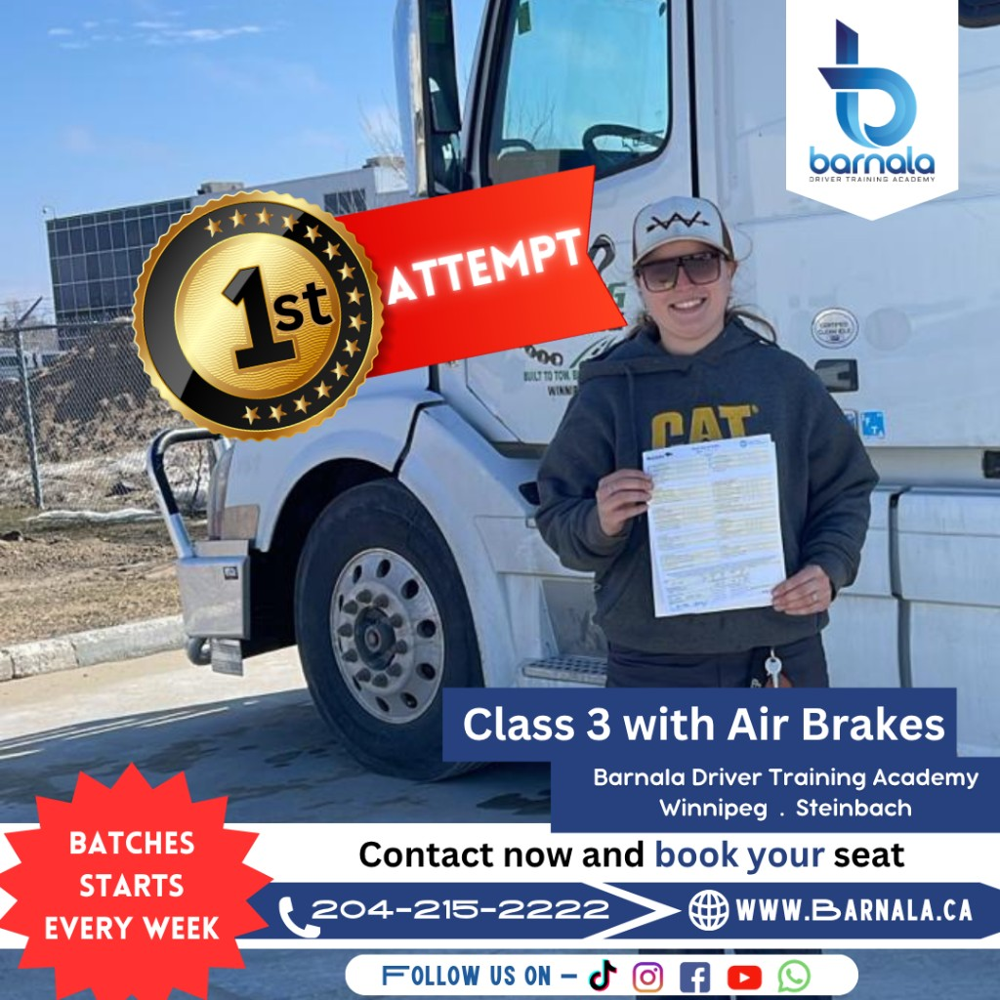
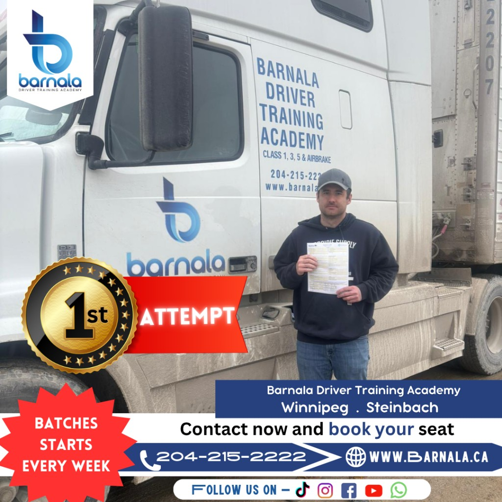

Looking to earn your Class 5 license in Manitoba? Our Class 5 driving lessons offer the foundation for every driver's journey, whether you're a beginner, a new Canadian resident, or someone looking to refresh their skills. Designed in line with Manitoba's Graduated Driver Licensing (GDL) program, our course helps students move confidently from Learner's to Intermediate, and finally to Full Class 5 licensing.
With our experienced instructors, flexible scheduling, and proven curriculum, you'll master safe driving habits that last a lifetime.
We take pride in helping our students become safe, confident, and successful drivers throughout Manitoba.


A Class 5 license is the most common driver's license in Manitoba. It allows individuals to legally operate passenger vehicles for personal transportation and everyday driving.
Whether you're commuting to work, taking your family on trips, or running daily errands, a Class 5 licence provides the freedom and independence needed for everyday life.
At Barnala Driver Training Academy, our Class 5 driving lessons prepare students to become confident, responsible, and safe drivers while meeting all Manitoba licensing requirements.
Manitoba uses the Graduated Driver Licensing (GDL) system to help new drivers develop their knowledge, skills, and confidence through a step-by-step learning process.
Our instructors guide students through every stage, helping them prepare for road tests while developing safe driving habits that last a lifetime.
Our Class 5 Driving Lessons are designed to help students become confident, responsible, and safe drivers. Every lesson combines classroom knowledge with practical behind-the-wheel training.
Our experienced instructors ensure every student develops the skills needed to pass the Manitoba road test and drive safely for life.
Our Class 5 Driving Lessons are suitable for anyone looking to become a safe and confident driver in Manitoba.
No matter your experience level, our instructors provide patient, professional guidance that helps every student build confidence behind the wheel.
A Manitoba Class 5 licence not only gives you the freedom to drive—it can also open the door to many employment opportunities across the province.
Whether you're commuting to work, supporting your family, or building a career, obtaining your Class 5 licence creates new opportunities and greater independence.
We offer affordable driving lesson packages designed to suit new drivers and individuals looking to improve their skills.
Whether you need a complete training package or a few refresher lessons before your road test, Barnala Driver Training Academy offers flexible training options to fit your schedule and learning goals.
For current pricing, available lesson packages, and special offers, please contact our team. We'll help you choose the option that's best for your experience level and licensing needs.
Call us today to receive the latest pricing and schedule your Class 5 driving lessons.
Barnala Driver Training Academy proudly provides professional Class 5 driving lessons across Manitoba, helping students gain the skills and confidence needed to become safe drivers.
If you're unsure whether we provide driving lessons in your area, contact our team and we'll be happy to assist you.
Here are some of the most common questions students ask about our Class 5 Driving Lessons.
The timeline depends on your progress through Manitoba's Graduated Driver Licensing (GDL) program and successful completion of the required road tests.
No. Our Class 5 Driving Lessons are suitable for complete beginners as well as drivers looking to refresh their skills.
Yes. Depending on your lesson package and availability, students may use one of our training vehicles for their Manitoba road test.
Yes. We offer flexible lesson times to accommodate students, working professionals, and new drivers.
We proudly provide Class 5 Driving Lessons in Winnipeg, Steinbach, Portage la Prairie, and surrounding Manitoba communities.
Begin your journey toward earning your Manitoba Class 5 licence with professional instruction from Barnala Driver Training Academy. Our experienced instructors are committed to helping you become a safe, confident, and responsible driver.
Enroll TodayHave questions about Class 5 Driving Lessons, scheduling, pricing, or Manitoba licensing requirements? Our friendly team is here to help you choose the right training program.